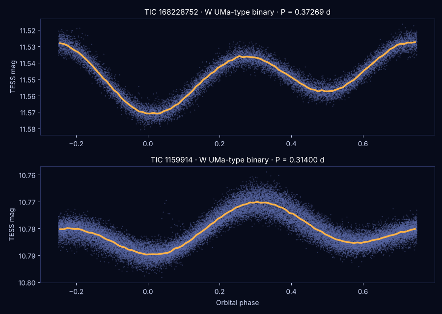
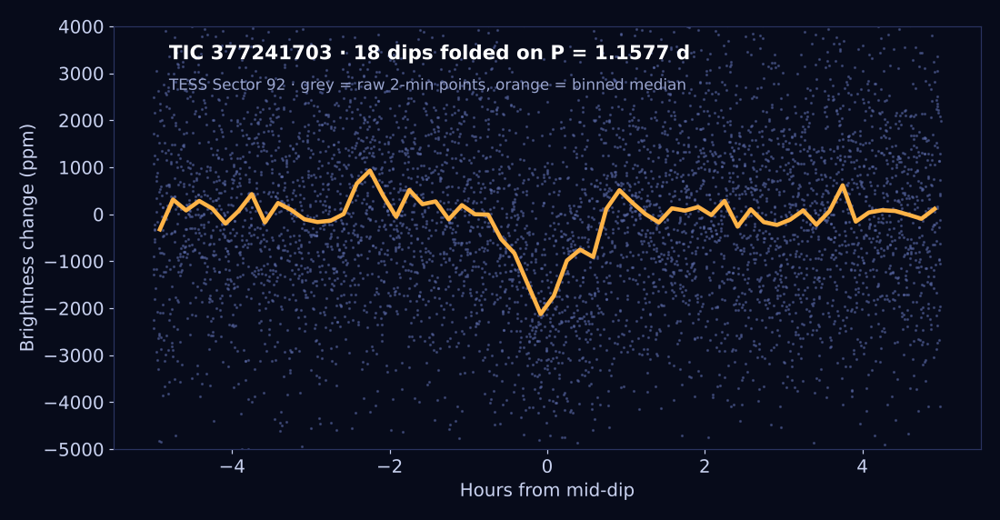
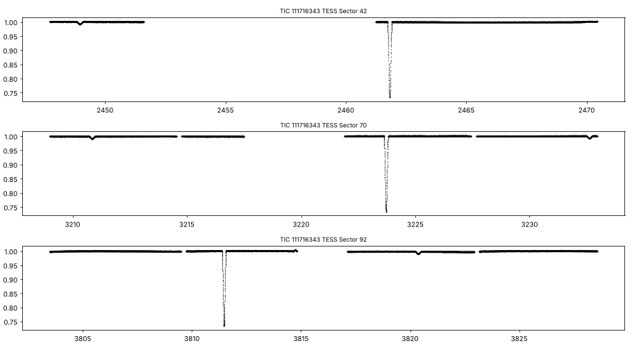

Entry 1 · The idea
Space is big, and most of its data is never looked at closely
NASA's TESS satellite measures the brightness of tens of thousands of stars every two minutes, and all of it is public. Automated pipelines scan it for planets, but they are tuned for specific signals and human vetting teams are small. My plan: write my own pipeline, point it at one patch of sky (TESS Sector 92, observed in 2025), and look at everything strange, not just planets.
Entry 2 · My first "discovery" (and my first mistake)
I found a planet candidate. Someone else found it in 2018
After testing my code on a known planet (WASP-18 b, recovered at the right 0.94-day period), I scanned 2,823 stars. One survived every check I knew: a 0.17% dip every 1.158 days on TIC 377241703, consistent with a grazing hot Jupiter.

I almost published it as new. Then I checked one more catalogue: the star is also called EPIC 218711655, and NASA's earlier K2 mission had already listed this exact signal as a planet candidate in 2018. My filter removed known TESS candidates but not K2 ones. The lesson, which I now apply to everything: "not in the list I checked" is not the same as "new". The consolation is that my code independently recovered the same period nine years later from a different telescope.
Entry 3 · Scaling up
12,666 stars, zero new planets, two new binaries
Every planet-like signal had a second, smaller dip halfway through its cycle: one star eclipsing another. For two of them, the Gaia space telescope had measured the star's velocity swinging by 106 km/s and 48 km/s, which only a stellar companion can do. Neither star appeared in AAVSO's International Variable Star Index (VSX), so I submitted the first one under my name on 24 November 2026; the second is queued. Both are pending review by VSX moderators.
Entry 4 · Letting an AI look for "weird"
An anomaly detector found a binary with a 21.8-day secret
Instead of searching for one kind of signal, I computed 15 shape features for each of 12,840 light curves (how deep the dips are, how irregular, how often the star flares, how periodic it is) and asked an Isolation Forest model which stars look least like the rest. Most of its picks were ordinary binaries and pulsating stars, plus two asteroids caught drifting past their stars. One stood out.

Entry 5 · JWST, briefly
Hunting asteroids in JWST images: so far, only ghosts
I also searched 49 individual JWST mid-infrared exposures near the plane of the Solar System for anything that moves between frames. Every candidate turned out to be a detector artifact: a glowing row of pixels, or glow at the edge of the coronagraph mask. The next version will mask those regions and cover far more fields.
Entry 6 · What's next
Next steps
- Follow the VSX submissions through review and submit the second binary.
- Check TIC 111716343 against VSX, then re-examine it with Gaia DR4 (released 2 December 2026), which will publish every individual position measurement.
- Run the anomaly hunt on a new TESS sector every week and log the results here.
If you're an astronomer and spot a flaw in any of this, please tell me. That's the fastest way I'll get better.